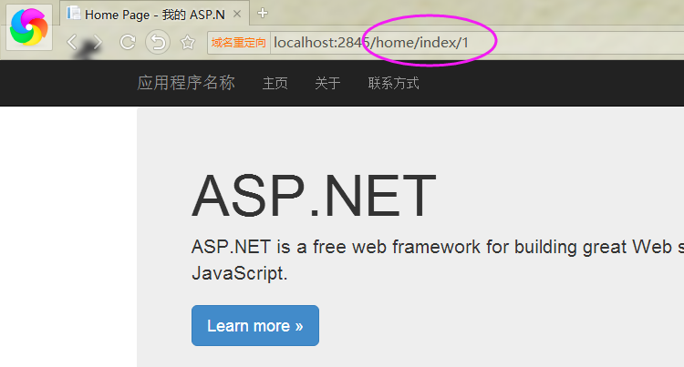
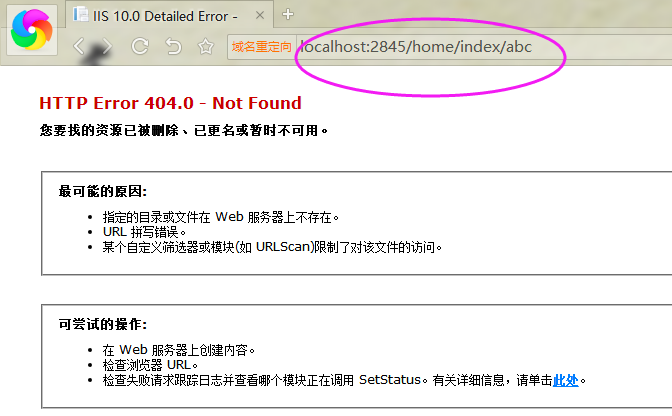
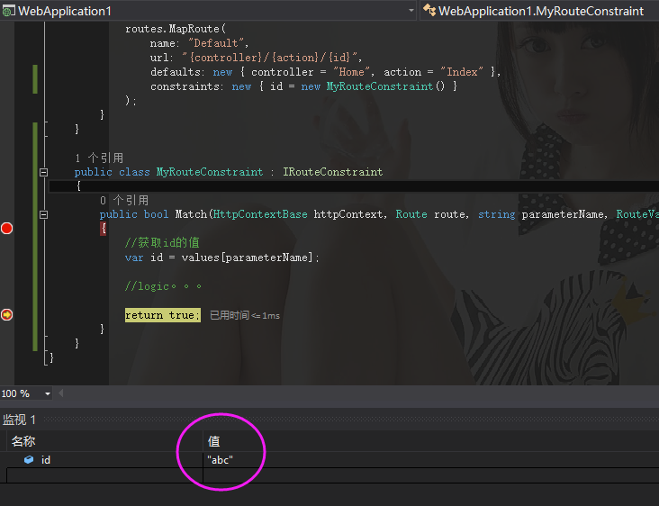
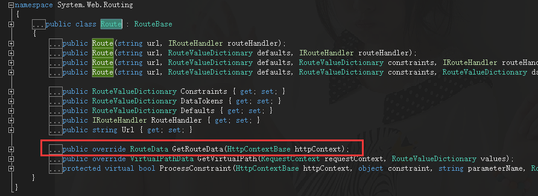
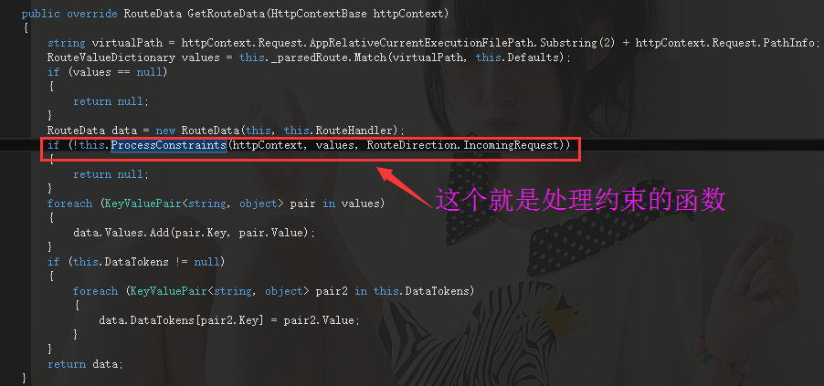
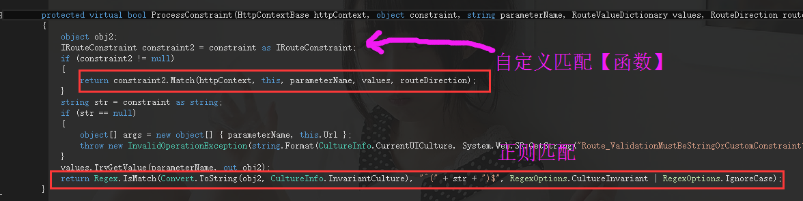

asp.net mvc 之旅—— 第三站 路由模板中强大的自定义IRouteConstraint约束
我们在写mvc的时候，经常会配置各种url模板，比如controller，action，id 组合模式，其实呢，我们还可以对这三个参数进行单独的配置，采用的方式自然
就是MapRoute中的constraints属性。
一：简单的正则匹配
正则匹配算是最最简单的一个方法，比如针对上面路由中id的值，我可以用正则进行限定，也就是说id只能是整数，这个可以做到吗？？？对这么扩展性极强的mvc，
当然可以做到，比如我下面写的这样：
routes.MapRoute( name: "Default", url: "{controller}/{action}/{id}", defaults: new { controller = "Home", action = "Index" }, constraints: new { id = @"\d+" } );
然后，我输入一个正确的url，效果是这样的。

当我把id改成abc的话，效果居然是这样滴。。。。

牛逼吧，页面已经无法打开，是不是很开心，接着就有吊毛找你，这个id限制能不能再强大点，根据数据库的配置，或者第三方逻辑来显示到底要不要显示，
这时候是不是有点悲剧，目前的id貌似只有正则匹配，貌似并不能强大到自定义逻辑控制id值，不过不要灰心，刚才我也说了，mvc是一个扩展性极强的框架，
这点事情自己有办法处理。
二：IRouteConstraint 强大的自定义逻辑验证
可以看到IRouteConstraint 是一个接口，接口定义如下：

1 // 2 // 摘要: 3 // 定义类必须实现才能检查某 URL 参数值是否对约束有效的协定。 4 [TypeForwardedFrom("System.Web.Routing, Version=3.5.0.0, Culture=Neutral, PublicKeyToken=31bf3856ad364e35")] 5 public interface IRouteConstraint 6 { 7 // 8 // 摘要: 9 // 确定 URL 参数是否包含此约束的有效值。 10 // 11 // 参数: 12 // httpContext: 13 // 一个对象，封装有关 HTTP 请求的信息。 14 // 15 // route: 16 // 此约束所属的对象。 17 // 18 // parameterName: 19 // 正在检查的参数的名称。 20 // 21 // values: 22 // 一个包含 URL 的参数的对象。 23 // 24 // routeDirection: 25 // 一个对象，指示在处理传入请求或生成 URL 时，是否正在执行约束检查。 26 // 27 // 返回结果: 28 // 如果 URL 参数包含有效值，则为 true；否则为 false。 29 bool Match(HttpContextBase httpContext, Route route, string parameterName, RouteValueDictionary values, RouteDirection routeDirection); 30 }
在这个接口中提供了一个Match方法，而我要做的就是实现一个继承它的类就可以了，当返回true代表通过，返回false代表匹配失败。。。。就像我现在
这样的烂代码:
1 public class RouteConfig 2 { 3 public static void RegisterRoutes(RouteCollection routes) 4 { 5 routes.IgnoreRoute("{resource}.axd/{*pathInfo}"); 6 7 routes.MapRoute( 8 name: "Default", 9 url: "{controller}/{action}/{id}", 10 defaults: new { controller = "Home", action = "Index" }, 11 constraints: new { id = new MyRouteConstraint() } 12 ); 13 } 14 } 15 16 public class MyRouteConstraint : IRouteConstraint 17 { 18 public bool Match(HttpContextBase httpContext, Route route, string parameterName, RouteValueDictionary values, RouteDirection routeDirection) 19 { 20 //获取id的值 21 var id = values[parameterName]; 22 23 //logic。。。 24 25 return true; 26 } 27 }
要看清楚哦。。。在我实现的MyRouteConstraint类中的Match方法，我通过values[parameterName]可以成功获取id的值，不行我可以调试给亲看。。。

拿到这个值之后，你就可以肆意的去玩耍了。。。
三：源码分析
到现在为止，你是不是很好奇这吊毛玩意是怎么实现的。。。。其实很简单的哦，还记得各种mvc入门书籍中说，路由路由的概念。。。其实呢，也就是一个
Route类而已嘛。。。就像下面这样。

而Route类中，最最重要的莫过于GetRouteData方法，它就是用来决定是否可以看心情把你这个http请求送到Controller中去。。。然后我们再来看看
这个方法的源代码。。。


最终，功夫不负有心人，两串最核心的代码展现在你的面前。
1. constraint as IRouteConstraint 如果当前是IRouteConstraint类型，走我实现的Match方法。
2. constraint as string 走我的正则匹配，如：Regex.IsMatch。。。。
好了，本篇就讲到这里，希望对你有帮助。